88 photographies d'infrastructures relevées avec le formulaire SIG, sur
6 territoire(s). Chaque image est celle téléversée par l'enquêteur, réduite
pour le web ; seules les photos dont le consentement a été recueilli sont
publiées. Cliquez une vignette pour la fiche complète et la position sur la carte.
Méthode. Photos rattachées à l'objet observé (nom d'usage,
type, statut) et à son secteur. Elles documentent l'état de l'infrastructure au jour du
relevé ; elles ne constituent pas un inventaire exhaustif. La mini-carte du détail reprend la
position relevée au GPS et le rayon de précision annoncé.
88 photos
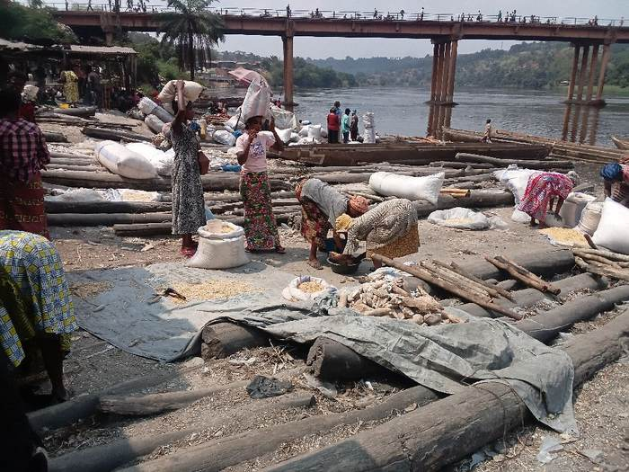
📍 position relevéeVoir le détail
Port kamani-maniRoute, piste, voie navigable · En activitéCommune de LUKOLELA (110603) — Ville de KIKWIT2026-09-27 · 4.8 m
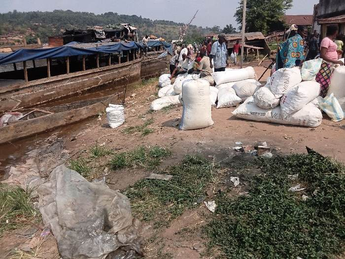
📍 position relevéeVoir le détail
Port central de kikwit (ONATRA)Route, piste, voie navigable · En activitéCommune de LUKOLELA (110603) — Ville de KIKWIT2026-09-27 · 4.0 m
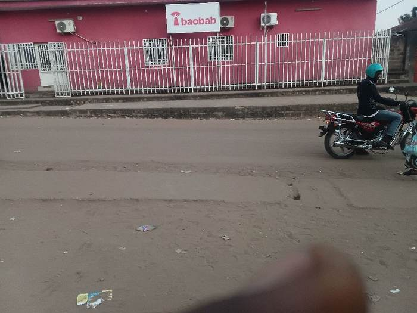
⚠ sans positionVoir le détail
Baobab/kikwitService financier · En activitéCommune de LUKOLELA (110603) — Ville de KIKWIT2026-09-27 · précision non renseignée
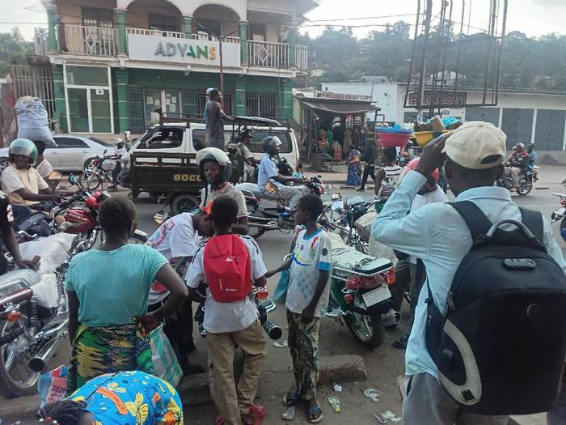
📍 position relevéeVoir le détail
Advans/kikwitService financier · En activitéCommune de LUKOLELA (110603) — Ville de KIKWIT2026-09-27 · 5.0 m
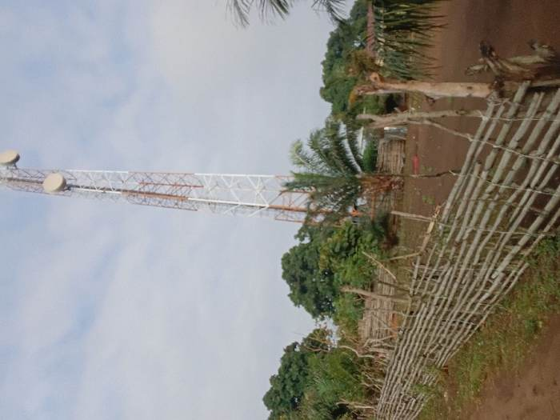
📍 position relevéeVoir le détail
AirtelTélécommunications (antenne, couverture) · En activitéCommune de PAY KONGILA (111503) — MASIMANIMBA2026-09-27 · 4.1 m
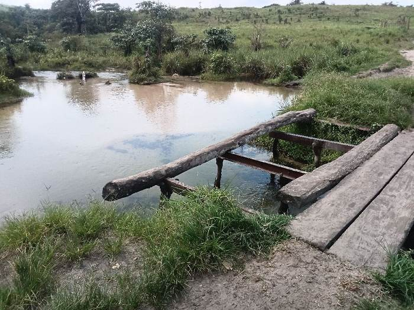
📍 position relevéeVoir le détail
Sans nomEau, cours d'eau, irrigation, source d'eau · En activitéCommune de PAY KONGILA (111503) — MASIMANIMBA2026-09-27 · 1.1 m
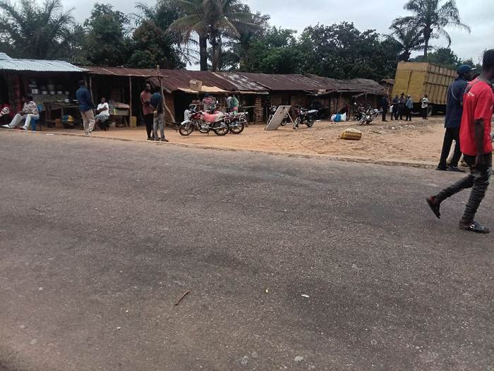
📍 position relevéeVoir le détail
Sans nomRoute, piste, voie navigable · En activitéCommune de PAY KONGILA (111503) — MASIMANIMBA2026-09-27 · 2.2 m
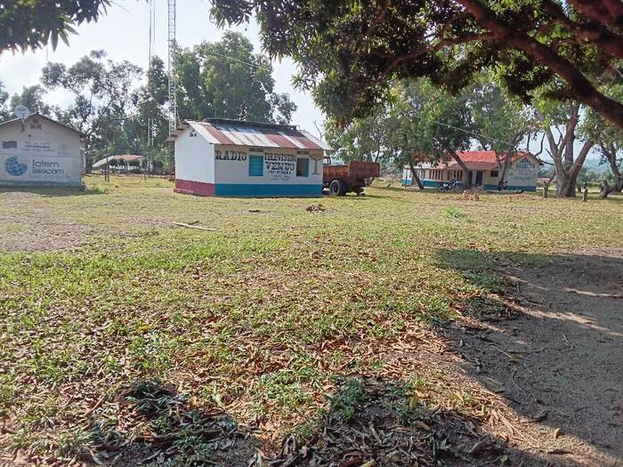
📍 position relevéeVoir le détail
Radio RAKI, Venus, RFBTélécommunications (antenne, couverture) · En activitéCommune de PAY KONGILA (111503) — MASIMANIMBA2026-09-27 · 4.8 m
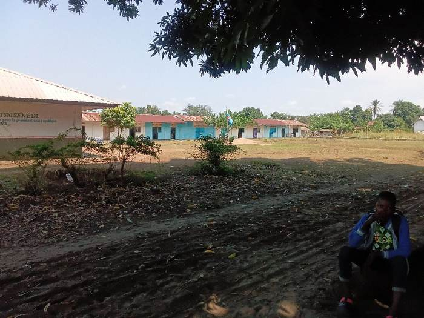
📍 position relevéeVoir le détail
Sous-divisionService financier · En activitéCommune de PAY KONGILA (111503) — MASIMANIMBA2026-09-27 · 4.9 m
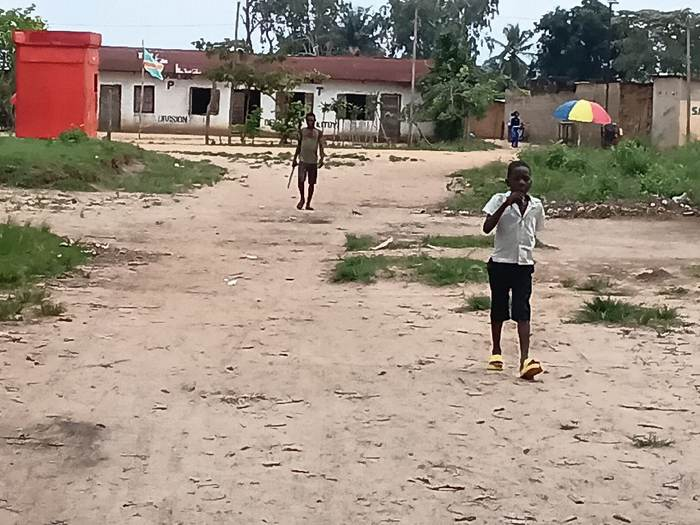
📍 position relevéeVoir le détail
Sous divisionService financier · En activitéKITOY (111508) — MASIMANIMBA2026-09-27 · 3.3 m
inspection du développement ruralAutres (à préciser) · En activitéCommune de LUKOLELA (110603) — Ville de KIKWIT2026-09-27 · précision non renseignée
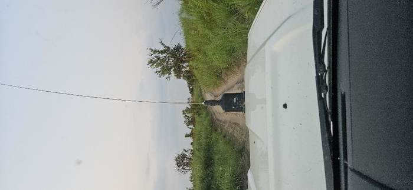
⚠ sans positionVoir le détail
(sans nom)Route, piste, voie navigable · En activitéCommune de KABUDI (110605) — Ville de KIKWIT2026-09-27 · précision non renseignée
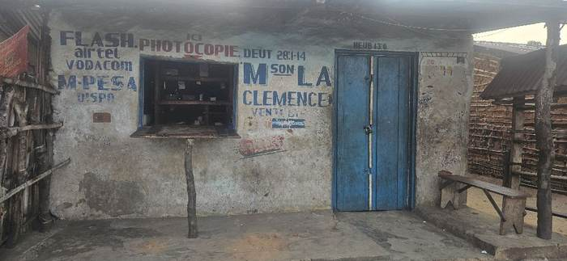
⚠ sans positionVoir le détail
boutique la clemenceAgent mobile Banking · En activitéCommune de KABUDI (110605) — Ville de KIKWIT2026-09-27 · précision non renseignée
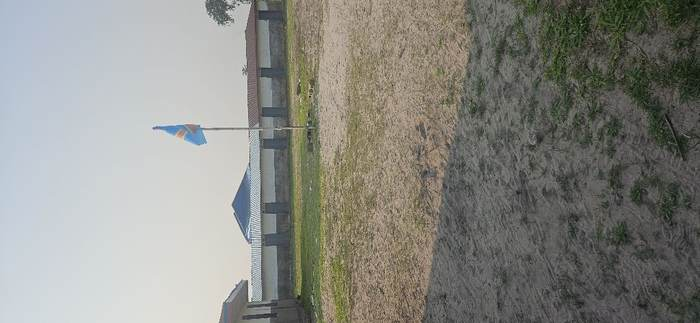
⚠ sans positionVoir le détail
site de la paie à la sous division de EPSTService financier · En activitéCommune de KABUDI (110605) — Ville de KIKWIT2026-09-27 · précision non renseignée
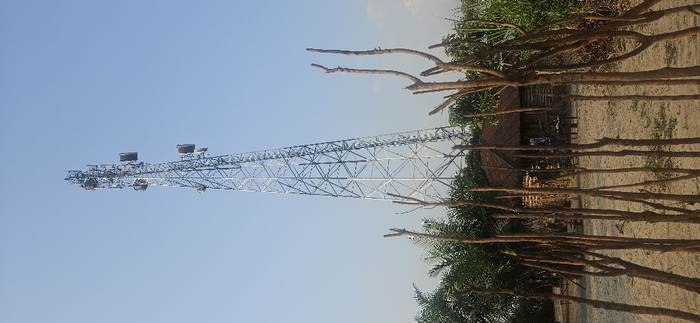
⚠ sans positionVoir le détail
antenne airtelTélécommunications (antenne, couverture) · En activitéCommune de KABUDI (110605) — Ville de KIKWIT2026-09-27 · précision non renseignée
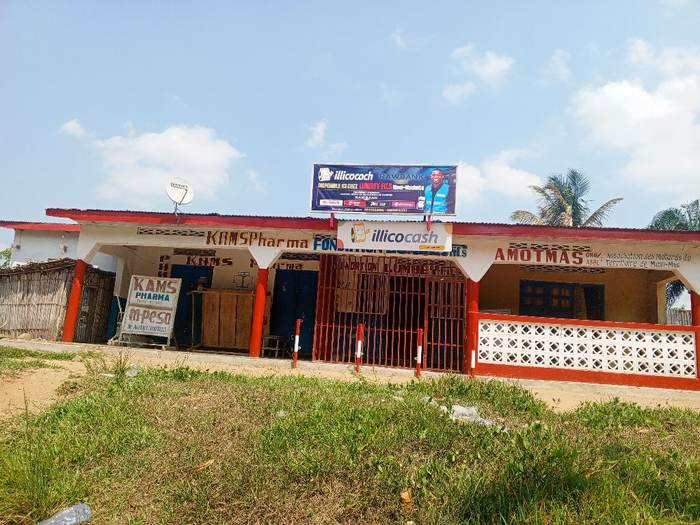
📍 position relevéeVoir le détail
Ets lumbeyAgent mobile Banking · En activitéMASI MANIMBA (111509) — MASIMANIMBA2026-09-27 · 5.9 m
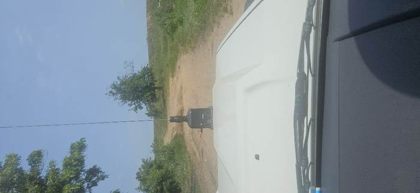
📍 position relevéeVoir le détail
ROUTE KIDIMARoute, piste, voie navigable · En activité101408 (101408) — KENGE2026-09-28 · 5.0 m
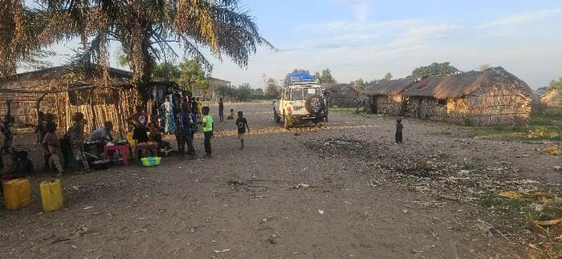
📍 position relevéeVoir le détail
CENTRE D AFFAIRESMarché / Entreprise chef de ville / pôle économique · En activité101408 (101408) — KENGE2026-09-28 · 6.7 m
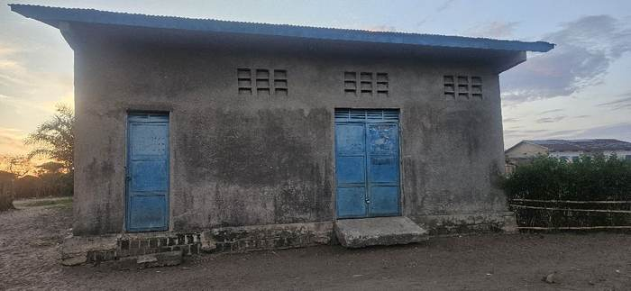
📍 position relevéeVoir le détail
ENTREPÔT KIDIMAAutres (à préciser) · En activité101408 (101408) — KENGE2026-09-28 · 4.5 m
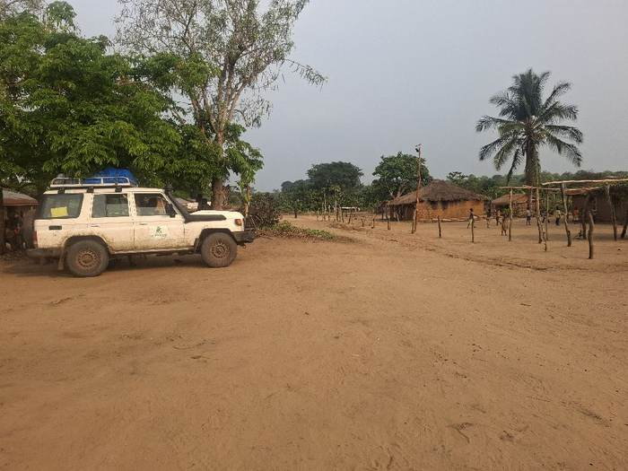
📍 position relevéeVoir le détail
Centre d'activitéMarché / Entreprise chef de ville / pôle économique · Partiellement actifKOLOKOSO (101406) — KENGE2026-09-29 · 5.3 m
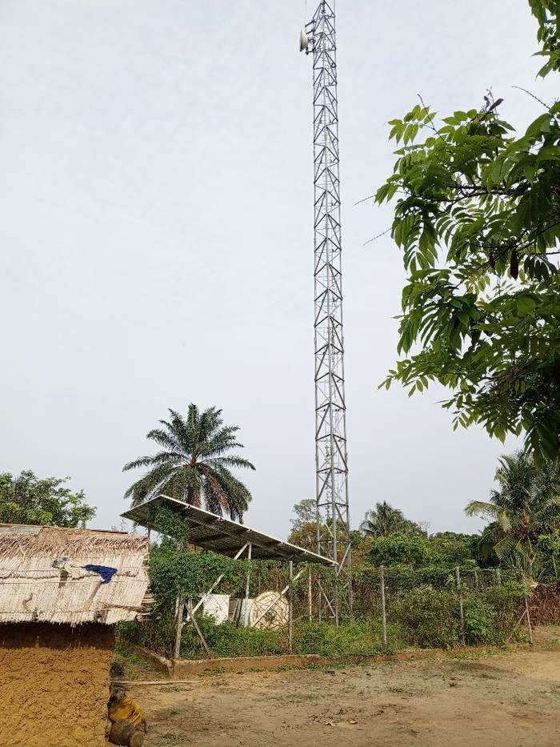
📍 position relevéeVoir le détail
VodacomTélécommunications (antenne, couverture) · En activitéKOLOKOSO (101406) — KENGE2026-09-30 · 2.8 m
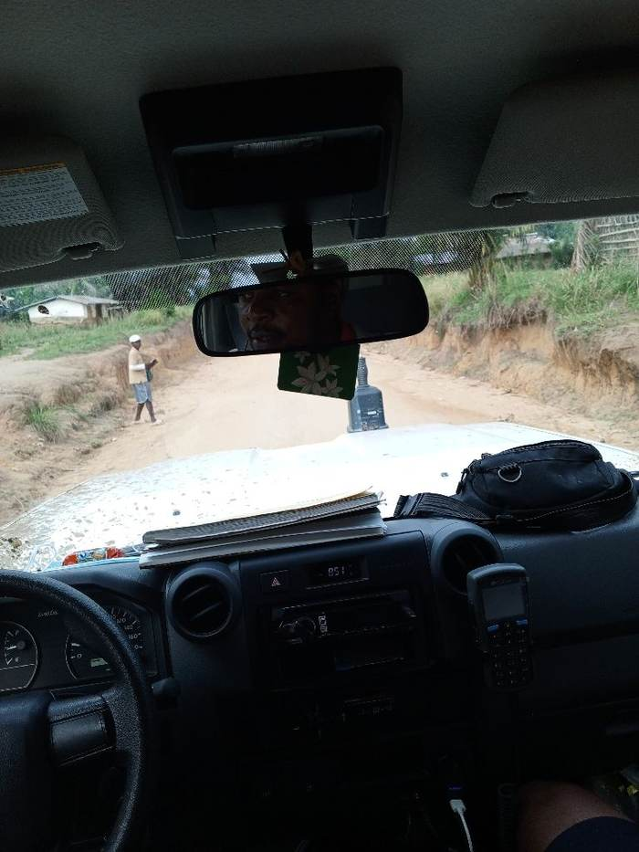
📍 position relevéeVoir le détail
1Route, piste, voie navigable · En activitéKOLOKOSO (101406) — KENGE2026-09-30 · 2.7 m
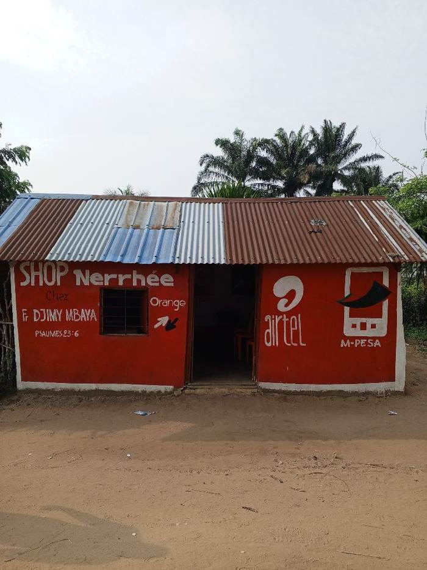
📍 position relevéeVoir le détail
Shop NerrhéeTélécommunications (antenne, couverture) · En activitéKOLOKOSO (101406) — KENGE2026-09-30 · 3.2 m
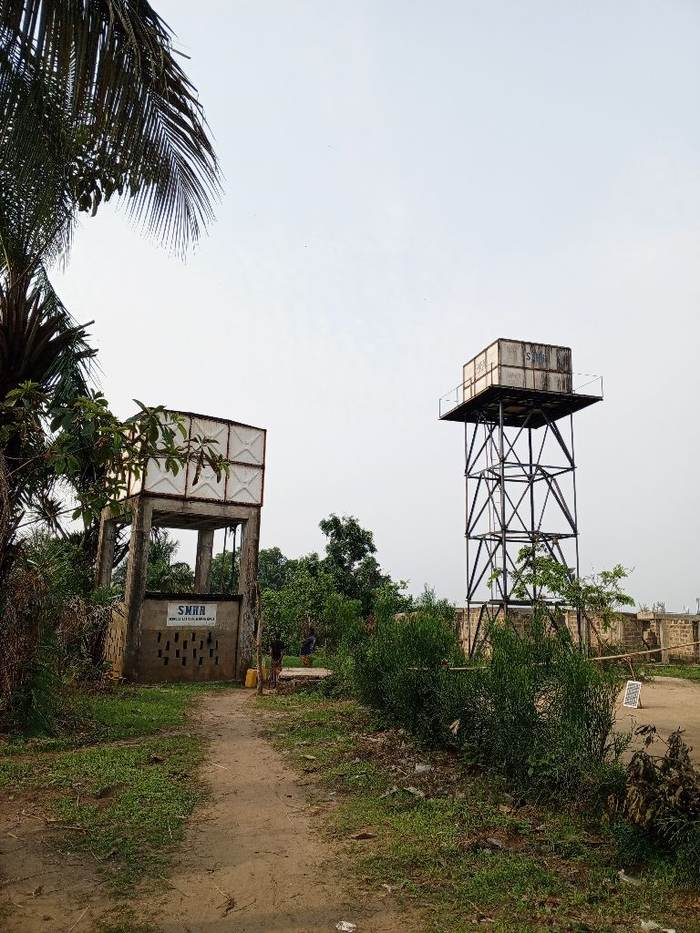
📍 position relevéeVoir le détail
SNHREau, cours d'eau, irrigation, source d'eau · En activitéKOLOKOSO (101406) — KENGE2026-09-30 · 6.1 m
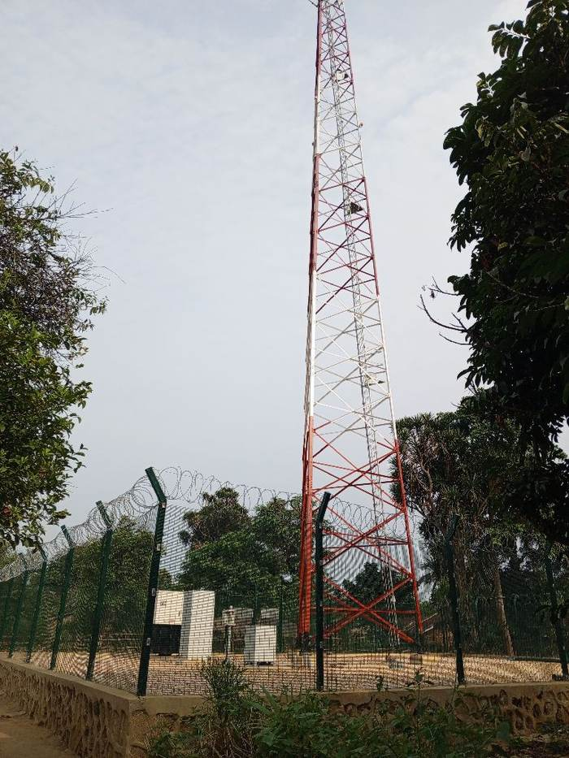
📍 position relevéeVoir le détail
AntenneTélécommunications (antenne, couverture) · En activitéKOLOKOSO (101406) — KENGE2026-09-30 · 6.1 m
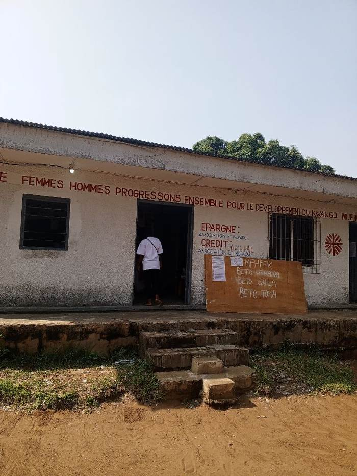
📍 position relevéeVoir le détail
MFHPEK COOPECAVEC, tontine, coopérative, association · En activitéCommune de KENGE II (101401) — KENGE2026-10-02 · 20.9 m
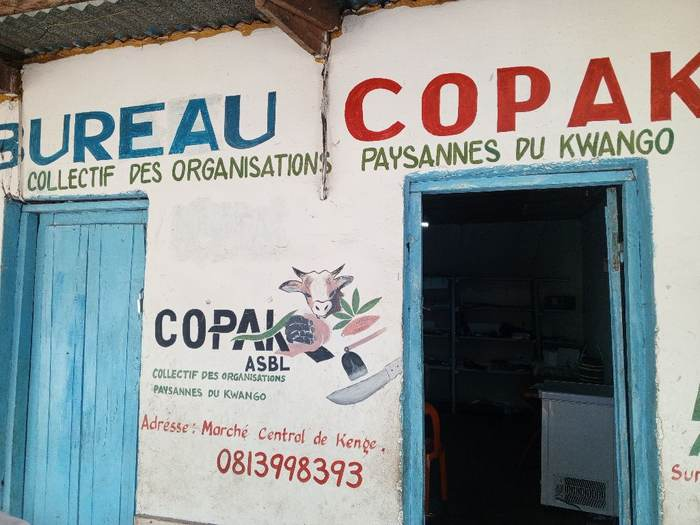
📍 position relevéeVoir le détail
COPAKAVEC, tontine, coopérative, association · En activitéCommune de KENGE II (101401) — KENGE2026-10-02 · 300.0 m
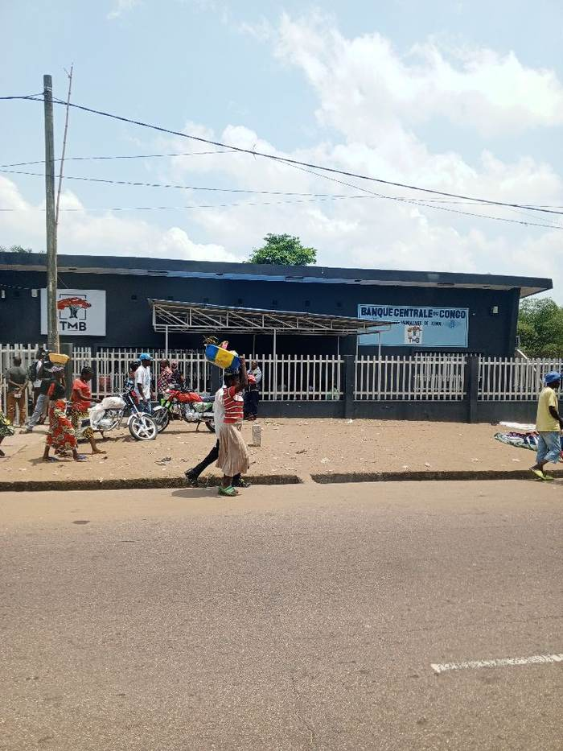
📍 position relevéeVoir le détail
TMBService financier · En activitéCommune de KENGE II (101401) — KENGE2026-10-02 · 45.5 m
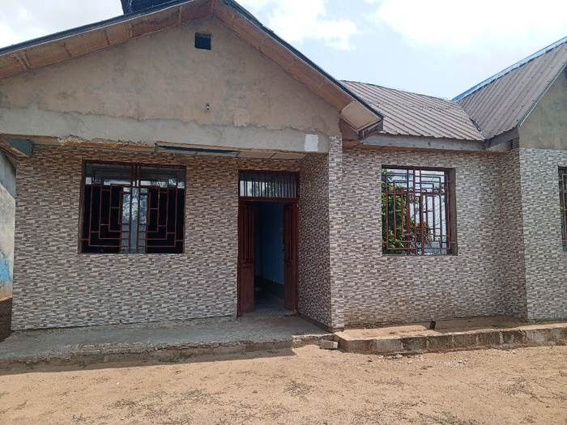
📍 position relevéeVoir le détail
FédérationAVEC, tontine, coopérative, association · En activitéCommune de KENGE II (101401) — KENGE2026-10-02 · 9.5 m
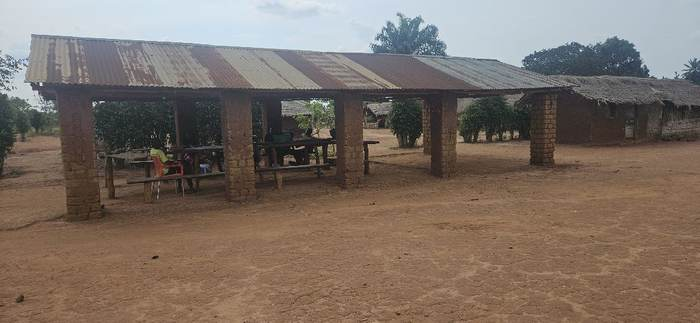
📍 position relevéeVoir le détail
marchéMarché / Entreprise chef de ville / pôle économique · Partiellement actifBABOMA NORD (151602) — MUSHIE2026-10-07 · 4.0 m
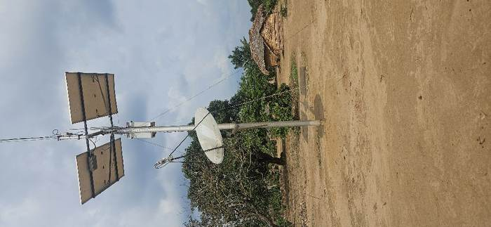
📍 position relevéeVoir le détail
antenne orangeTélécommunications (antenne, couverture) · En activitéBABOMA NORD (151602) — MUSHIE2026-10-07 · 11.9 m
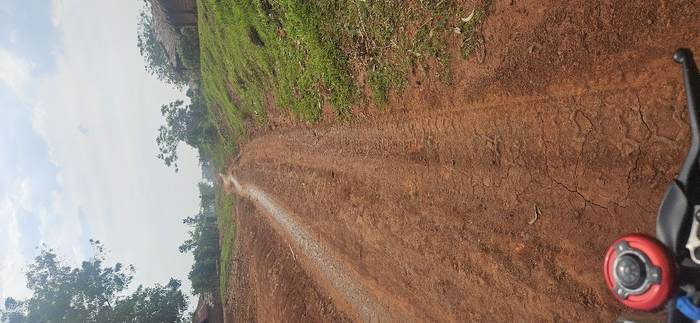
📍 position relevéeVoir le détail
route mbala 2 - mushiRoute, piste, voie navigable · En activitéBABOMA NORD (151602) — MUSHIE2026-10-07 · 4.5 m
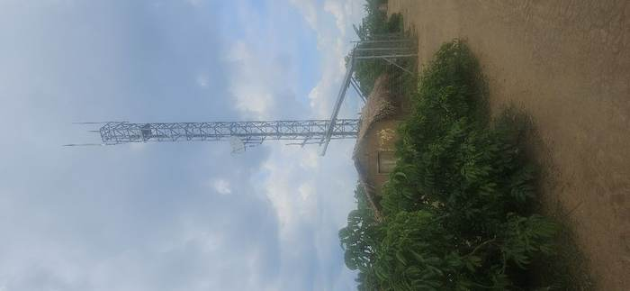
📍 position relevéeVoir le détail
antenne vodacomTélécommunications (antenne, couverture) · En activitéBABOMA NORD (151602) — MUSHIE2026-10-08 · 9.9 m
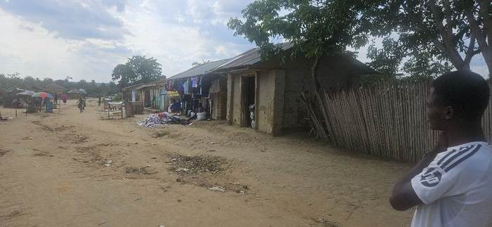
📍 position relevéeVoir le détail
marche ndjokeleMarché / Entreprise chef de ville / pôle économique · Partiellement actifBABOMA NORD (151602) — MUSHIE2026-10-08 · 4.9 m
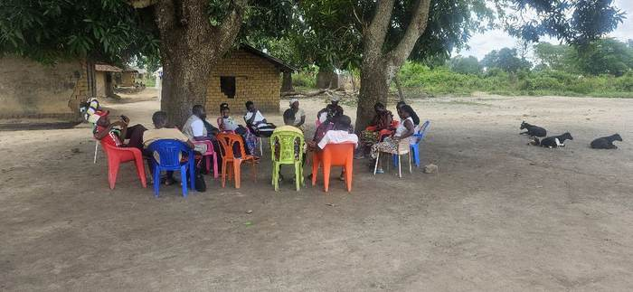
📍 position relevéeVoir le détail
chez le chef du villageMarché / Entreprise chef de ville / pôle économique · En activitéBABOMA NORD (151602) — MUSHIE2026-10-08 · 5.2 m
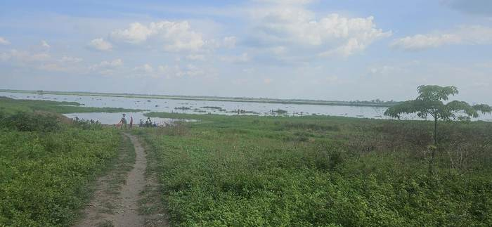
📍 position relevéeVoir le détail
tronçon ndjokele mushi sur la rivière mfimiRoute, piste, voie navigable · Partiellement actifBABOMA NORD (151602) — MUSHIE2026-10-08 · 3.5 m
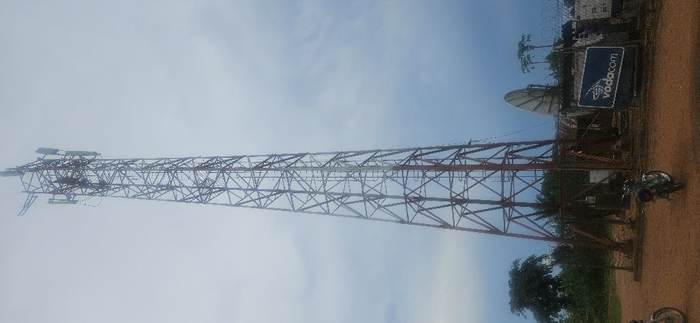
📍 position relevéeVoir le détail
antenne vodacomTélécommunications (antenne, couverture) · En activitéCommune de MUSHIE (151601) — MUSHIE2026-10-09 · 4.1 m
📍 position relevéeVoir le détail
piste aérodrome devenu la brousseRoute, piste, voie navigable · Infrastructure dégradéeCommune de MUSHIE (151601) — MUSHIE2026-10-09 · 3.0 m
📍 position relevéeVoir le détail
antenne orangeTélécommunications (antenne, couverture) · En activitéCommune de MUSHIE (151601) — MUSHIE2026-10-13 · 3.1 m
📍 position relevéeVoir le détail
marché central de mushiMarché / Entreprise chef de ville / pôle économique · En activitéCommune de MUSHIE (151601) — MUSHIE2026-10-13 · 7.3 m
📍 position relevéeVoir le détail
bureau et centreAutres (à préciser) · En activitéCommune de MUSHIE (151601) — MUSHIE2026-10-13 · 5.7 m
📍 position relevéeVoir le détail
eglise catholiqueAutres (à préciser) · Partiellement actifCommune de MUSHIE (151601) — MUSHIE2026-10-13 · 3.8 m
📍 position relevéeVoir le détail
port de mushiRoute, piste, voie navigable · En activitéCommune de MUSHIE (151601) — MUSHIE2026-10-13 · 8.1 m
📍 position relevéeVoir le détail
tronçon mushi niokiRoute, piste, voie navigable · En activitéCommune de MUSHIE (151601) — MUSHIE2026-10-13 · 4.1 m